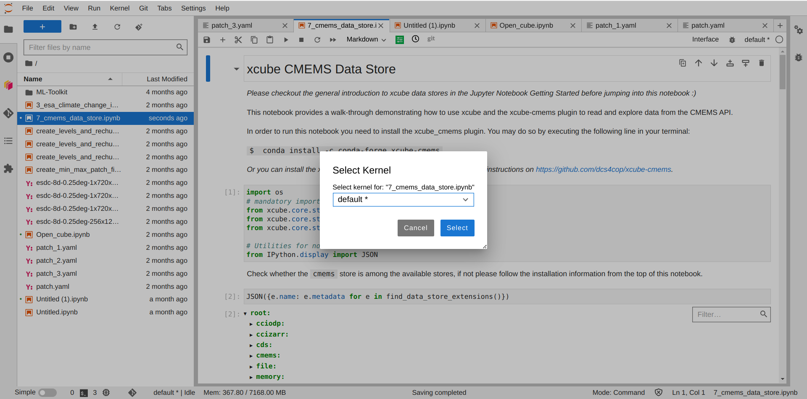
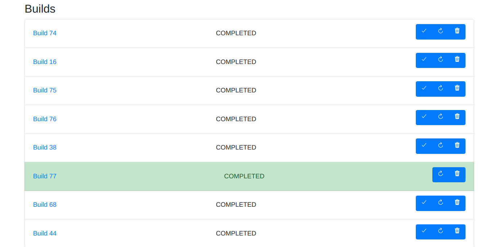
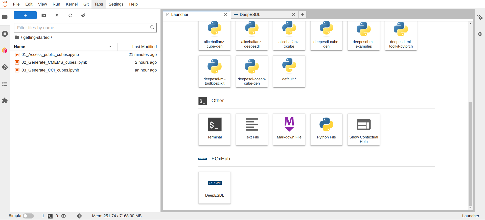
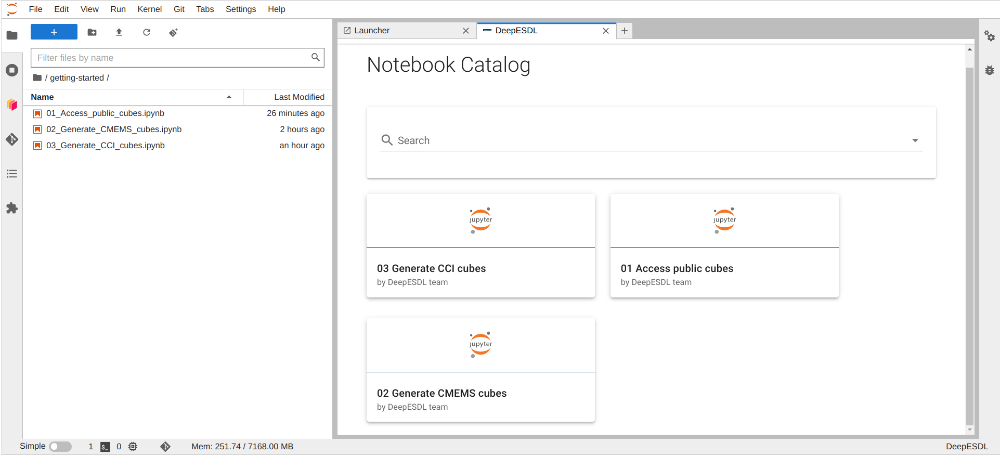
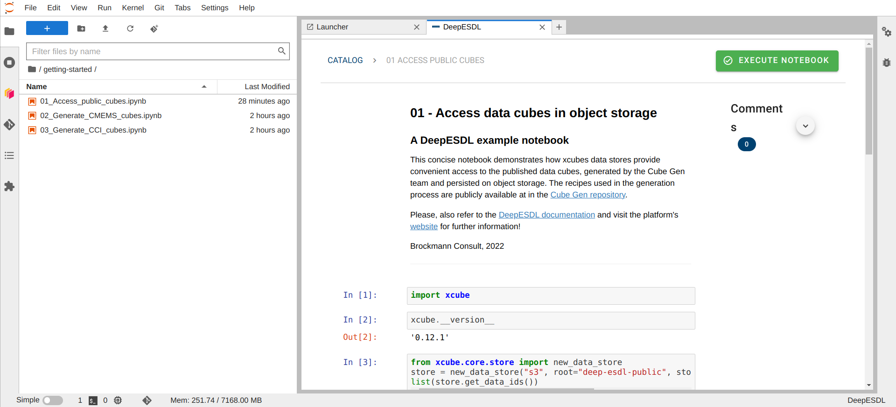

Jupyterlab
DeepESDL JupyterLab#
Basic usage#
This section provides a brief introduction for users to the basic features of the JupyterLab environment as offered by DeepESDL. For more in-depth documentation on the various components, see the links in the section Further Information.
Logging in and starting the JupyterLab profile#
To use the DeepESDL JupyterLab environment, navigate to https://deep.earthsystemdatalab.net/ with a web browser (a recent version of Firefox, Chrome, or Safari is recommended).
Before first usage, we will have to register you with the system. Currently,
we are not operational yet and still in testing phase. There is the
possibility to register already as an Early Adopter. To this, we kindly ask you
to write as an email at esdl-support@brockmann-consult.de and we will see
if we can already onboard you.
DeepESDL uses a GitHub to authenticate, so if you are already registered as a DeepESDL user, please use your GitHub account to log in. If your Jupyter server is not already running, you may be presented with a menu of user JupyterLab profiles to use for your session; there might be one or more JupyterLab profiles to choose from, depending on the computational resources needs of your team. Please select a suitable profile for your current task; it might not always require the profile with the strongest computational resources available. After choosing your environment, you will see a progress bar appearing for a few moments while it is started for you. The JupyterLab interface will then appear in your web browser, ready for use.
Changing a JupyterLab profile#
If you have already started your session and need to change the JupyterLab profile,
you can do this by selecting Hub control panel from the File menu within
JupyterLab. Then click the Stop my server button and wait for your current
server to shut down. When the Start my server button appears, you can click
on it to return to the user JupyterLab profiles menu.
Logging out#
To log out, select Log out from the File menu within JupyterLab.
Note that your JupyterLab session will continue in the background even after you have logged out, but will eventually be terminated due to inactivity. If you wish to stop your session explicitly, you can use the hub control panel as described in the Changing a JupyterLab profile section above.
Python environment selection of the Jupyter Kernel#
If you wish to use a special set of python packages, you can adjust it in the top right corner of the notebook. Next, a drop-down menu will appear, and you can select the desired kernel environment from it.

If the selected kernel seems not to load, it could be due to caching of kernels which do not exist anymore. To remove cached non-existing environment kernels, follow these steps:
- Open the terminal within the jupyter lab
$ rm -r .local/*- it is alright to get a message like: "rm: cannot remove
'.local/share/jupyter': Directory not empty" because you might have
notebooks open, which are in the cache. Make therefor sure not to force
the
rmcommand! - Restart your jupyterlab server by selecting Hub control panel from the
File menu within JupyterLab. Then click the
Stop my serverbutton and wait for your current server to shut down. Select theStart my serverbutton once it appears to return to the user JupyterLab profiles menu and restart your session.
To get a custom environment which suits your needs, please contact the DeepESDL team directly.
Creating custom team python environment#
Up to two team members may create a custom python conda environment for a team. Please inform the DeepESDL Team who should be granted these permissions.
Steps to create custom team conda environments:
- Head over to https://deep.earthsystemdatalab.net/conda-store
- Login with your GitHub Account which you also use to access the DeepESDL JupyterLab
- If you have never created a custom environment, there will be none listed.
- Click on the Plus-sign next to Environments
- In the top section, select the namespace for which to create the custom environment. There might be more than one if you are part of several teams. If you are unsure which namespace you should use, have a look at the Server Options overview of the DeepESDL JupyterLab.
-
You may either choose an environment.yml file to upload or paste your environment configuration into the window directly. It should look something like this example:
channels: - conda-forge dependencies: - xcube=1.1.1 - xcube-cds - xcube-sh - xcube-cmems - xcube-cci - xcube_geodb - boto3 - rasterio>=1.3.6 - cartopy - ipykernel name: xcube-1.1.1 -
Make sure to set a meaningful value to the environment's
nameproperty, so also your teammates will know what it is about. - Once you are happy with your environment hit submit and grab a coffee. It will take some time to create your custom environment.
- After submission, it will appear in the overview on https://deep.earthsystemdatalab.net/conda-store/
- You can click on the name of your newly created environment and see its status. There are three different statuses: Building, Completed, Failed
- If you click on the build number you can see the logs. This might be useful if the build has failed.
- Once the build is completed, you need to refresh your browser window to make it available in the kernel selection. Instructions how to change the kernel to your custom environment are provided in the section python environment selection of the jupyter kernel.
You can also modify an existing environment and rebuild it; the conda-store will keep all the builds' logs. It will look similar to the screenshot below. 
The conda-build highlighted in green is the one, which you will use in you DeepESDL JupyterLab, per default it is the latest successful build. If you wish to make a different build the one to be used in DeepESDL JupyterLab, select the checkmark in the blue button panel of the desired conda-build. The reload button in the blue button panel will trigger a rebuild of the conda-environment specification of the selected conda-build. The bin button deletes the conda-build of the selected conda-build.
Getting-started notebooks#
You can find example notebooks in DeepESDL JupyterLab to help you to get started.
To access them:
-
Head to the JupyterLab
Launcher If yourLauncheris not visible right away, you can open it via theplusbutton in the top left corner, which is highlighted in blue in the screenshot. -
On the bottom of the Launcher you see a tile called
CATALOG DeeESDL. Please select this tile. -
Once selected you see several example notebooks: 
-
Select one of them, and you will see a preview of the notebook, to execute the selected notebook click on
EXECUTE NOTEBOOKin the top right corner.  -
The notebook is copied into your workspace, and you can run it and adjust it according to your needs.
Team resources#
If you are using DeepESDL Jupyter Lab with others in a team, you can share content with each other and access the team S3 bucket for data storage.
Team shared directory#
To access the team shared directory, you can mount it into your workspace. This is a one-time action, and once mounted, it will persist in your workspace unless you choose to remove the mount. If you are part of multiple teams, you only need to mount the directory once; there’s no need to do so for each team separately.
To mount the team shared directory:
-
Open the terminal in the DeepESDL Jupyter Lab via the Launcher.
-
$ ln -s /extra ~/team-shared
That’s it! You will now see the team shared directory in your workspace. Please be aware that anyone in the team can see, add, modify, or delete content in this directory.
Team shared S3 bucket#
How to make use of the DeepESDL Team shared bucket is demonstrated in the example notebook Save_cube_to_team_storage.ipynb. The notebook is located in the DeepESDL notebook catalog in the "team-shared" category.